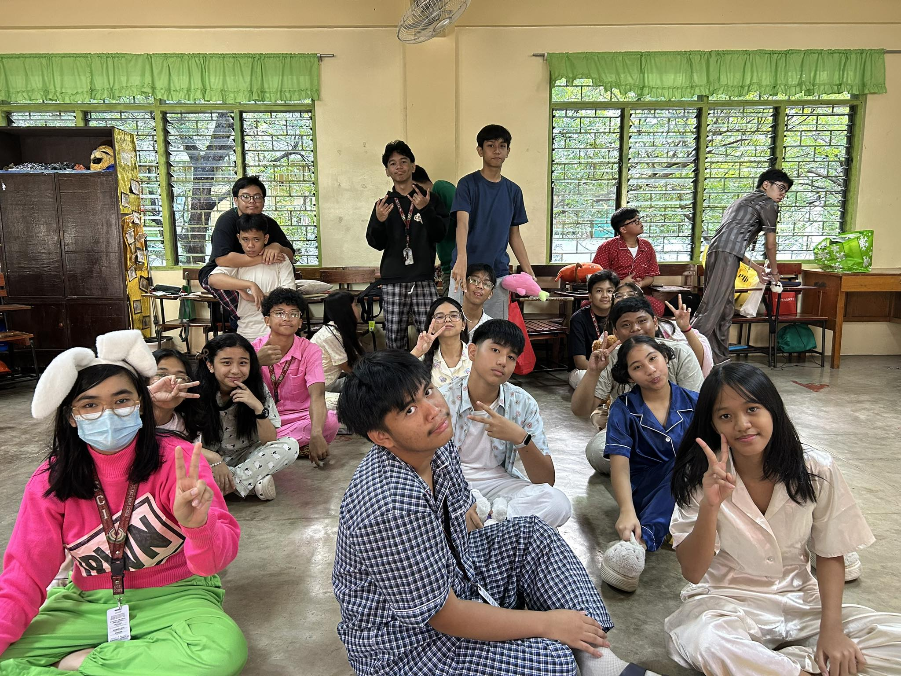

Year end Party!!!!🎊🎊(Andaming nangyari sa maiksing pagsasama natin faith!😢😢😂😂)
1. What is the most important thing I learned from the event?
I learned the importance of sharing, gratitude, and celebrating together as a community.
2. How can I apply what I learned in real life?
I can apply it by being generous, appreciating what I have, and spreading happiness to others.
3. Did I actively participate in the event? How?
Yes, I participated by joining the activities, games, and celebrating with my classmates.
4. If I were to teach this topic to a classmate, how would I explain it?
I would explain that Christmas is about giving, kindness, and spending time with others.
5. Why is it important to have this event?
It is important because it strengthens friendship and reminds us about the value of giving and gratitude.